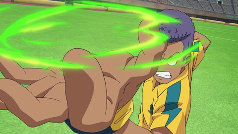

イナズマイレブン復活プロジェクトから新作ゲームの発表告知があって幾度となく発売延期と開発中止を繰り返し、2023年も未だ音沙汰を感じない現在。
アマプラにていつの間にか「アレスの天秤」が配信されていた。
新主人公「稲森明日人」務める「アレスの天秤」と「オリオンの刻印」(以下、アレオリ)の評判の悪さは耳にしており、自分自身中々踏ん切りつかないという気持もあったが周囲とイナズマイレブンの話で数年ぶりに盛り上がったことや栗松帰国ブームなどのネットミームも相まって視聴を決意。
このブログでは、もう他の方々が「過去キャラの扱いが悪すぎる」「必殺技の演出が劣化してる」などは語り尽くされているため、ここでは敢えて多くは触れない方向で描かせていただく。
純粋にこの作品を見て私が何を感じたか、どう思ったか。この作品がなぜあまり乗り切れなかったのかを自分で分析していく。
主人公だけどなんか影が薄い。
ビックリするくらい影が薄い。
正直、彼に留まらず主人公チームである伊那国雷門全員の影が薄く、全く思い入れを感じられなかった。
よく特訓の描写が薄い/試合中に過去回想を何度も挟んだりとか、監督の指示を聞いてたらなんか逆転できたり必殺技出来てしまったとか聞くけれど、魅せ方が下手と言うだけで特訓もしてないのにと言われるのは少し違うなという気はした。
稲森明日人を検索するとサジェストに「嫌い」が出ていたが、個人的に「嫌いではないけど好きになれるところもはあまりなかった」と言ったところだ。
キャッチコピーは「太陽に選ばれたサッカー小僧」。劇中でも語られるとおり、円堂と同じタイプの強い光で周囲を照らす太陽のような少年をイメージしていた。
しかし、彼自身の強み。
円堂であれば溢れるガッツとカリスマ性、天馬であればドリブルが得意のような個性が今ひとつ感じられず、純粋にサッカーが好き。サッカーと向き合うと言う意思は感じられるのだが、彼がサッカーを始めたキッカケやサッカーを通じて何を伝えたいのか、その辺が希薄なキャラと言う印象。
加えてこの明日人というキャラ、本作のサブタイトルにもなっている「アレスの天秤」（簡潔に言えば「子供の人格や自由を犠牲にして完璧な人間を育て上げる教育プログラム」）
このアレスの天秤に対して明日人は全くと言っていいほど関わりを持つことなく、故郷で廃部にされたサッカー部をもう一度立て直す（作中ではサッカーを連れ帰ると言うサッカーが泣いてるよ表現）と言う目標を果たす為にフットボールフロンティア優勝というゴールに向けて励むというもの。
一度もその全貌どころか世間的に認知されてるクリーンな部分だけを又聞きで知った程度で、最悪精神崩壊を招くような危険な仕組みであると言う要素すら彼が知ることはなかった。
自分は、アレスの天秤の恐ろしさを知った明日人が自分のサッカーを続け、サッカー本来の楽しさを伝えることで周囲に影響を与えつつアレスの天秤を否定すると言うストーリーを想像していた。
だが、そのアレスの天秤を破壊する役目は、彼が知らないところで二人目と三人目の主人公灰崎と野坂が大元の人物を物理的にブッ倒して決着がついてしまった。
彼は、いわゆるサッカーの光であることから影の部分は知る必要はない純粋な人間と言うことかもしれないが、サブタイトルにまでしておき、あたかも3人の主人公がアレスの天秤を中心にそれぞれの思いが交錯していくというように見せておいて、この関わりのなさは意図的な物だと思われる。
彼自身、アレスの天秤に対して何にも知らない存在でありながら「彼が楽しそうにサッカーをやってて影響された」と言う野坂や灰崎の心理描写にもイマイチ説得力が感じられず、最後の最後まで蚊帳の外にいる人間……という印象が強かったが、よく見るとその逆で。野坂と灰崎が出てこなければ「アレスの天秤」なんて言葉すら出てこないので、明日人は純粋にサッカーを楽しんでる裏で勝手にバチバチやり合ってる二人と言うくらいにしか映らなかった。
なぜ、こんなことになってしまったのか。
ここでこのアレスの天秤を中心とした縦軸の話だとするならば、致命的に噛み合わなかったのが過去キャラ客演路線だ。
GOの時であれば、フィフスセクターというサッカー管理組織によって支配された学校を一つずつ雷門が打ち倒すことでフィフスセクターの強さを順番に上げていく役目や、話の中心に雷門が存在している意義もあった。
同じように、アレスの天秤の教育プログラムを受けた王帝月宮の廉価版チームと少しずつ戦わせていけば、こんな蚊帳の外になることはなかった筈だった。
それを阻んでしまったのが過去キャラ客演路線だと思われる。
いくら過去キャラの扱いが悪いと言え、このようなシステムで従順になる過去キャラや支配されるシーンはいくらなんでも不味いという感性はあるだろうし、出したからには描きたい話も沢山あった筈。
故に、鬼道さんや豪炎寺、吹雪や円堂たちもアレスの天秤とは全く無関係の存在で「それぞれ自分たちのチームに抱えた弱点を克服しながら雷ぶつかり合う」と言う方式になった為に全く別軸の話となってしまったと思われる。
また、永世学園や白恋中学でもだったが敵チームの描写や回想に限られた時間内に尺を取りすぎるあまり、伊那国雷門の掘り下げに使う時間がなくなり、特に永世学園ではヒロトとタツヤの関係に時間を割きまくった結果、気持ちが永世学園に移って、殊更伊那国雷門を応援したいという気持ちがドンドン薄れていくのも問題だった。
以上、アレスの天秤の総評でした。
悪いところばかり書き連ねましたが素直に面白いと言うシーンも度々あり、最初の木戸川vs星章戦。灰崎がチームプレイの大切さを知る瞬間、豪炎寺vs鬼道の駆け引きなど、見ごたえのある試合もあり、永世学園戦では賛否両論あるでしょうがヒロトとタツヤに絞った掘り下げと二人で放つコズミック・ブラスターは本当に格好よかった。
伊那国雷門のキャプテンが自分がキャプテンとして相応しくないと悩むところを円堂がそれとなくアドバイスをするのもまさに円堂さん！って感じで瞬間的な風力はあったように感じられました。ちなみに自分は伊那国雷門では剛陣先輩が好きになったと思う。
ちなみに自分は伊那国雷門では空気空気と上記したが剛陣先輩が好きになった。

「ファイアレモネード」の言い間違え芸のしつこさや「弾道補正」などで嫌われてる意見も見られたし自分も同じ意見だった
彼はいわゆるチームの賑やかし枠であり、天才ではない凡人である。
だが、持ち前のタフさとガッツだけは決して天才にも負けない染岡さんを彷彿とさせる根性を見せ、一人だけマグレ発動したバックドラフトを除けば決勝戦でもまともに必殺技が完成しなかったが最後の最後、同点の雷門と王帝月宮戦において決勝点を決めたのはまさかの彼である。
主人公の明日人でも、エースストライカーの小僧丸でも、助っ人に来た灰崎でもなく彼である。
わざわざ助っ人に来たのに最初しか役に立ってない灰崎や決勝戦だというのに点を入れてない明日人を差し置いて
これには最初、困惑したがここぞという場面、何度も失敗していた彼を信用し、必死で彼へ繋いだ明日人たち雷門イレブン。
凡人である剛陣先輩が、努力と根性の積み重ねの結果、ついに「ファイアレモネード」を発動させたことで逆転する。
まさしく、合理性だけを追求した「アレスの天秤」の破壊そのものであり、雷門の勝利としてこの上なく相応しい物であったと思われる。
きっとそうなのだろうと一周して彼の魅力に気付けるようになった。
剛陣、お前がナンバーワンだ
もう一人、野坂の側近である西蔭もまた、野坂を強く崇拝する男で自分を野坂のことになると冷静な性格から一転、ヤンデレ化するところや野坂から変な食べ物押し付けられてる姿は割と面白かった。
ギャグ抜きにああいった側近ポジションのキャラに個人的に弱いところもあったと思われる。
以上
この後、オリオンの刻印は49話分あったので視聴中に切りの良さそうな所を見繕って前後編に分けてお送りいたします